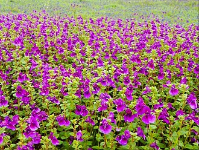

Satara, located in the heart of Maharashtra, is known for its mesmerizing beauty, rich history, and lush greenery. Nestled in the Western Ghats, Satara is home to stunning landscapes, waterfalls, and historical forts. It is a perfect destination for nature lovers, history enthusiasts, and adventure seekers alike.
Satara offers a range of attractions that will leave you captivated. Some of the top places to visit in Satara include:
The best time to visit Satara is from June to September during the monsoon season, when the landscape transforms into a lush green paradise, and the waterfalls are at their fullest. Another ideal time is the winter season, from November to February, when the weather is pleasant for trekking and exploring the forts and natural beauty.
Satara is well-connected by road and rail. It is located about 120 kilometers from Pune and 250 kilometers from Mumbai. You can reach Satara by:
If you're looking for a peaceful yet adventurous getaway surrounded by nature, Satara is the perfect travel destination. With its rich historical heritage and mesmerizing natural beauty, Satara offers an experience that you will cherish forever.
For more information about Satara and to plan your visit, check out this Wikipedia page about Satara.